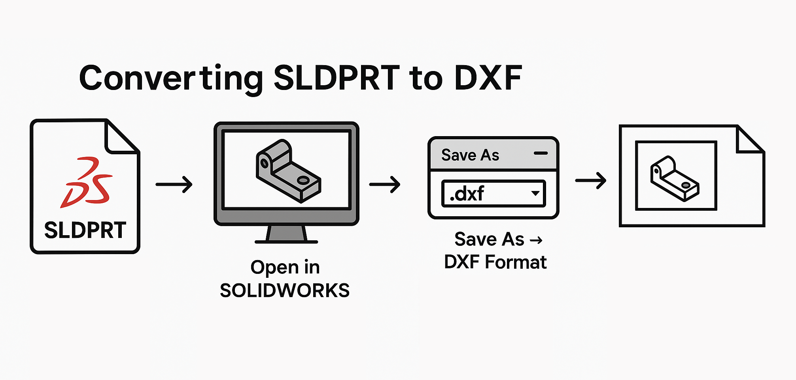

Export Sheet Metal to DXF in SOLIDWORKS
Macro Description
This VBA macro automates the process of exporting all sheet metal parts from a SOLIDWORKS assembly to DXF files. The macro loops through each component in the assembly, checks if it's a sheet metal part, and exports the flat pattern of the part to a DXF file. The macro ensures that duplicate parts are not processed more than once, preventing redundant exports.
VBA Macro Code
Option Explicit
' ********************************************************************
' DISCLAIMER:
' This code is provided as-is with no warranty or liability by
' Blue Byte Systems Inc. The company assumes no responsibility for
' any issues arising from the use of this code in production.
' ********************************************************************
' Enum for Sheet Metal export options
Enum SheetMetalOptions_e
ExportFlatPatternGeometry = 1
IncludeHiddenEdges = 2
ExportBendLines = 4
IncludeSketches = 8
MergeCoplanarFaces = 16
ExportLibraryFeatures = 32
ExportFormingTools = 64
ExportBoundingBox = 2048
End Enum
' solidworks app variable
Dim swApp As SldWorks.SldWorks
Dim swModelDoc As ModelDoc2
Dim swAssemblyDoc As AssemblyDoc
Dim swComponents As Variant
Dim swComponent As Component2
Dim swComponentIterator
Dim processedFiles() As String
Sub Main()
ReDim processedFiles(0)
processedFiles(0) = ""
Set swApp = Application.SldWorks
Set swModelDoc = swApp.ActiveDoc
Set swAssemblyDoc = swModelDoc
swComponents = swAssemblyDoc.GetComponents(False)
For Each swComponentIterator In swComponents
Set swComponent = swComponentIterator
Dim swComponentModelDoc As ModelDoc2
Set swComponentModelDoc = swComponent.GetModelDoc2
If Not swComponentModelDoc Is Nothing Then
If ExistsInProcessedFiles(processedFiles, swComponentModelDoc.GetPathName()) = False Then
addItemToProcessedFiles processedFiles, swComponentModelDoc.GetPathName()
PrintDXF swComponentModelDoc
End If
End If
Next swComponentIterator
End Sub
Function ExistsInProcessedFiles(ByRef arr() As String, fileName As Variant) As Boolean
Dim i As Long
For i = LBound(arr) To UBound(arr)
If arr(i) = fileName Then
ExistsInProcessedFiles = True
Exit Function
End If
Next i
ExistsInProcessedFiles = False
End Function
Sub PrintDXF(ByRef swmodel As ModelDoc2)
If swmodel.GetType() = swDocumentTypes_e.swDocPART Then
Dim swPart As PartDoc
Set swPart = swmodel
Dim modelPath As String
modelPath = swmodel.GetPathName
Dim outPath As String
outPath = Left(modelPath, Len(modelPath) - 6)
outPath = outPath + "dxf"
swmodel.Visible = True
Dim saveDXF As Boolean
saveDXF = swPart.ExportToDWG2(outPath, modelPath, swConst.swExportToDWG_e.swExportToDWG_ExportSheetMetal, True, vbEmpty, False, False, SheetMetalOptions_e.ExportFlatPatternGeometry + SheetMetalOptions_e.ExportFlatPatternGeometry + SheetMetalOptions_e.ExportFlatPatternGeometry + SheetMetalOptions_e.ExportBendLines, vbEmpty)
If saveDXF Then
Debug.Print swmodel.GetTitle() & " saved"
Else
Debug.Print swmodel.GetTitle() & " failed to save"
End If
swmodel.Visible = False
End If
End Sub
Public Sub addItemToProcessedFiles(ByRef arr() As String, ByVal processedFile As String)
Dim arrLength As Long
arrLength = UBound(arr)
If arrLength < 0 Then
ReDim arr(0)
arr(0) = processedFile
Else
ReDim Preserve arr(arrLength + 1)
arr(arrLength + 1) = processedFile
End If
End Sub
System Requirements
To run this VBA macro, ensure that your system meets the following requirements:
- SOLIDWORKS Version: SOLIDWORKS 2017 or later
- VBA Environment: Pre-installed with SOLIDWORKS (Access via Tools > Macro > New or Edit)
- Operating System: Windows 7, 8, 10, or later
Note
Pre-conditions
- The active document must be an assembly (.sldasm) in SOLIDWORKS.
- Ensure that the components contain valid sheet metal parts for export.
Note
Post-conditions The flat pattern of each sheet metal part will be exported as a DXF file.
Macro
You can download the macro from here
Customization
Need to modify the macro to meet specific requirements or integrate it with other processes? We provide custom macro development tailored to your needs. Contact us.